Fun Projects for your LEGO® MINDSTORMS® NXT!
|
|
Fun Projects for your LEGO® MINDSTORMS® NXT! |
| Top Spinner |
|

1
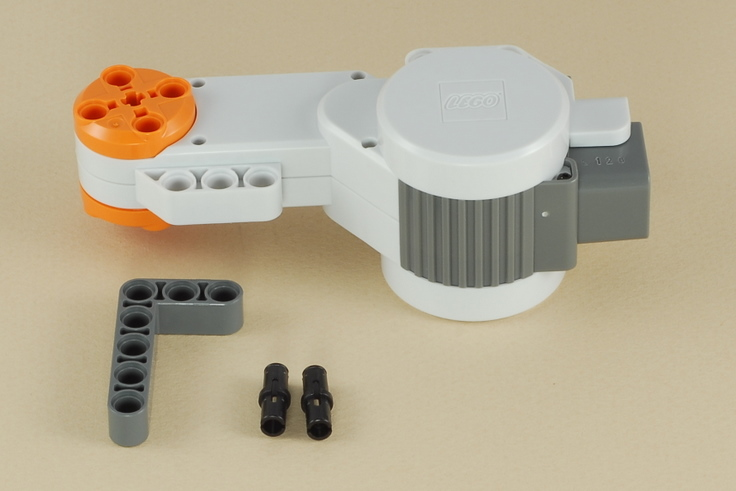
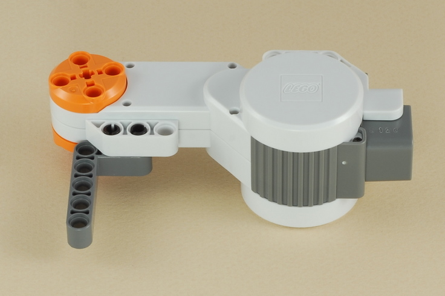
2
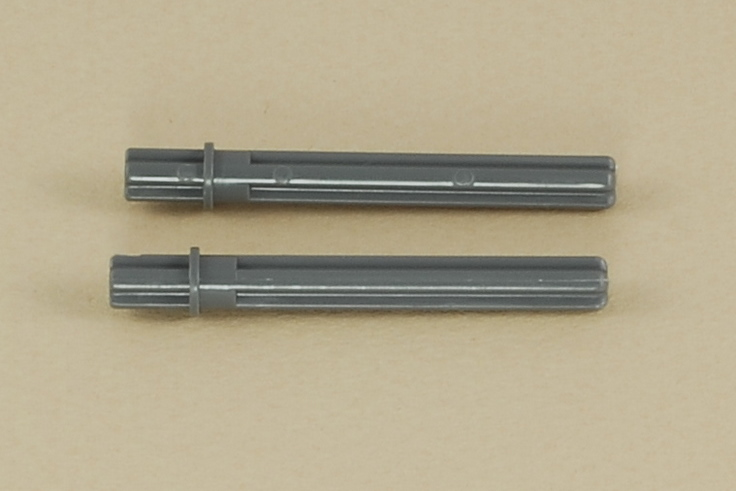
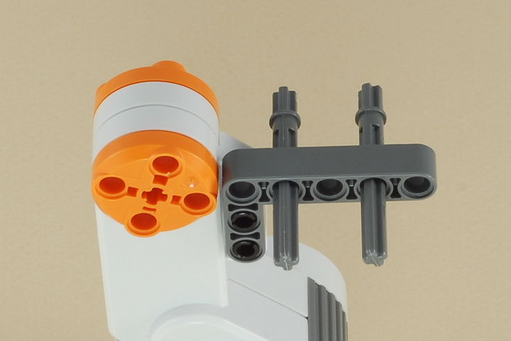
3
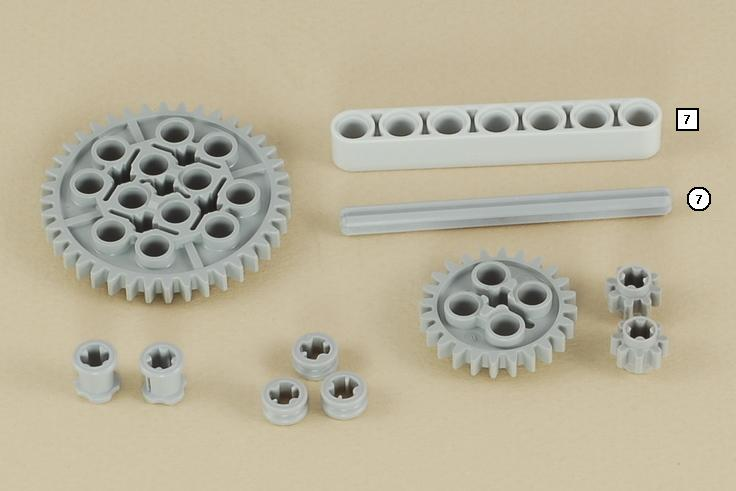
Make sure the parts on this step are not pushed
together too tightly.
There should be tiny gaps to allow everything to spin easily.
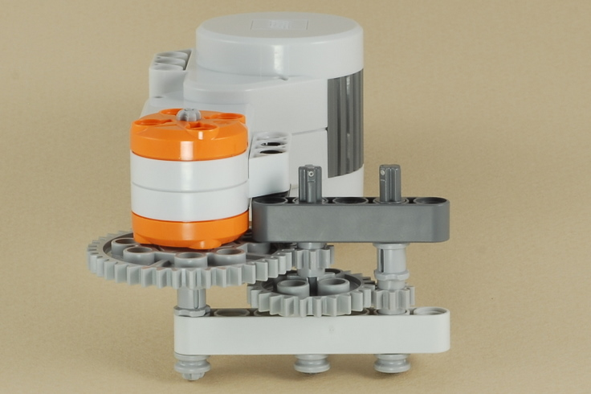
4
Design your own spinning top. Here is a simple one to start with.
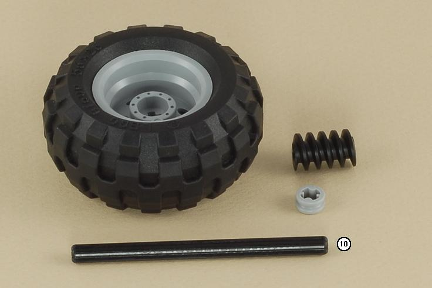
Note: The shaft of the axle should only
go about half way through the spiral worm gear,
leaving a hole to insert the motor shaft into.
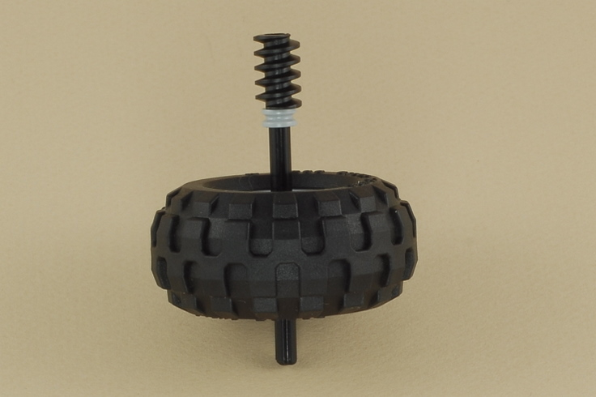
5
Attach a wire from the motor to port A on the NXT brick.
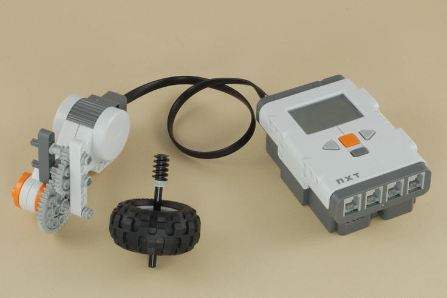
| Top
Spinner Programming Use the program Motor A Full for your spinning top. Tip: The Motor A Full program simply turns on motor A at full power and leaves it on until you stop the program with the dark gray button on the NXT brick. This program can be used to power any creation you make that just needs to keep one motor spinning. |
| 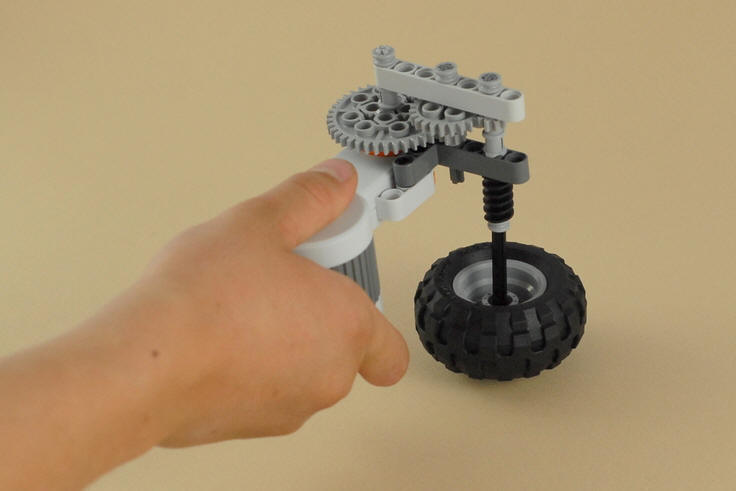 | 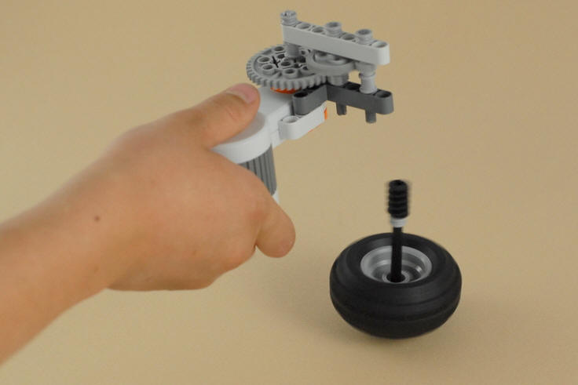 |
| Insert the shaft at the end of the gear train into the top of the spiral worm gear, and hold your top lightly against a hard floor (don't press down). | Run the program to start the top spinning. When it has finished speeding up, gently lift the motor off straight up. The worm gear may fall off during launch. That's OK, just replace it before the next run. |
| The NXT Motor
turns too slowly to spin a top by itself, so the gears speed it up.
The high-speed outer shaft (pictured
here on the left) spins 15 times as fast as the NXT motor! |
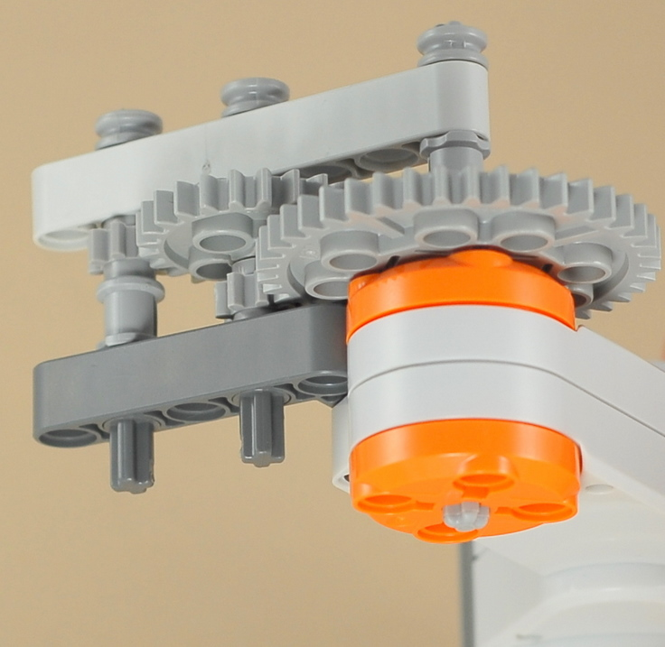 |
Challenges
|
|
Copyright
©
2007-2009 by Dave Parker. All rights reserved. |